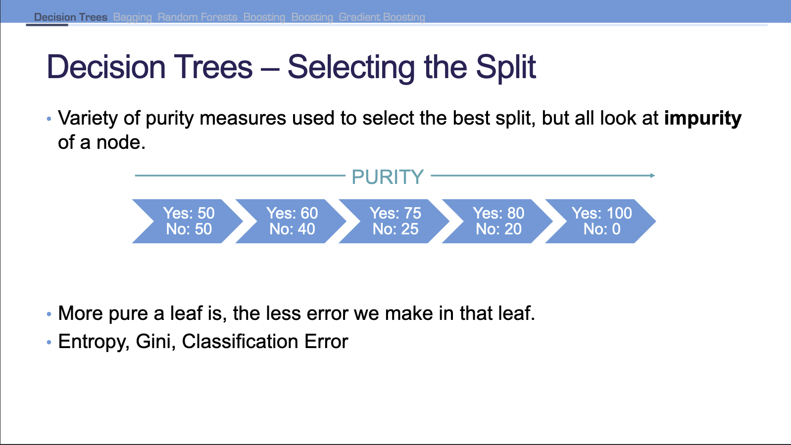
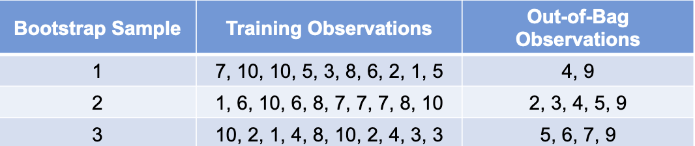
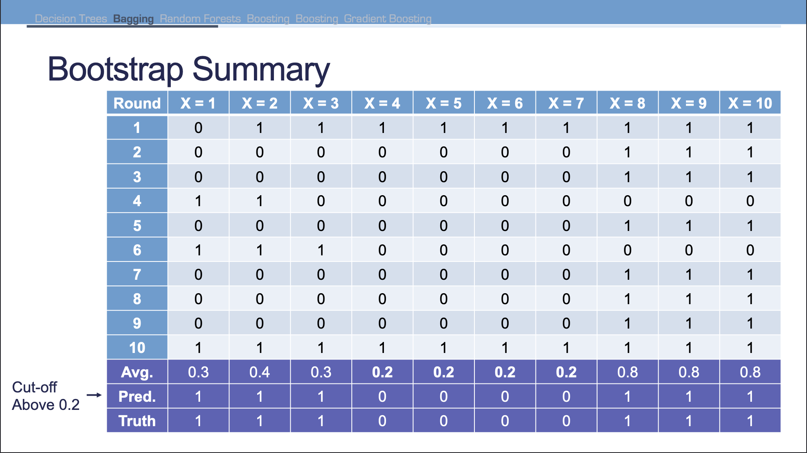
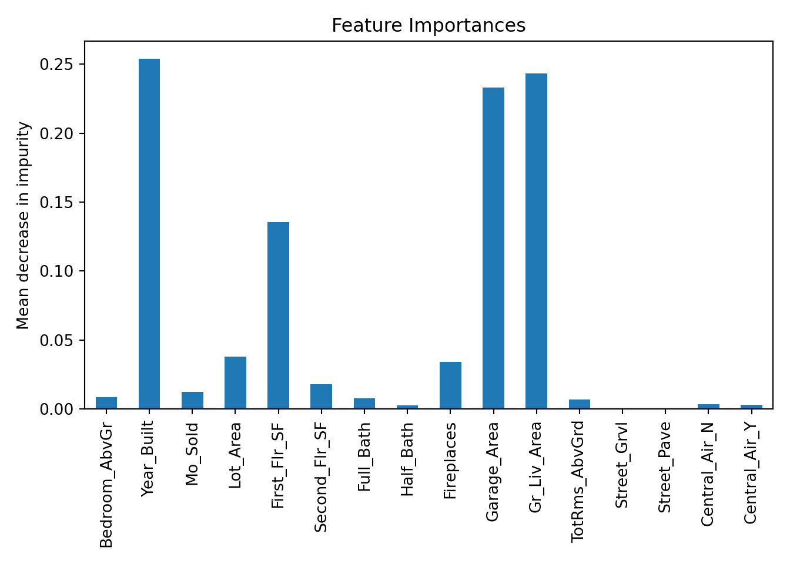
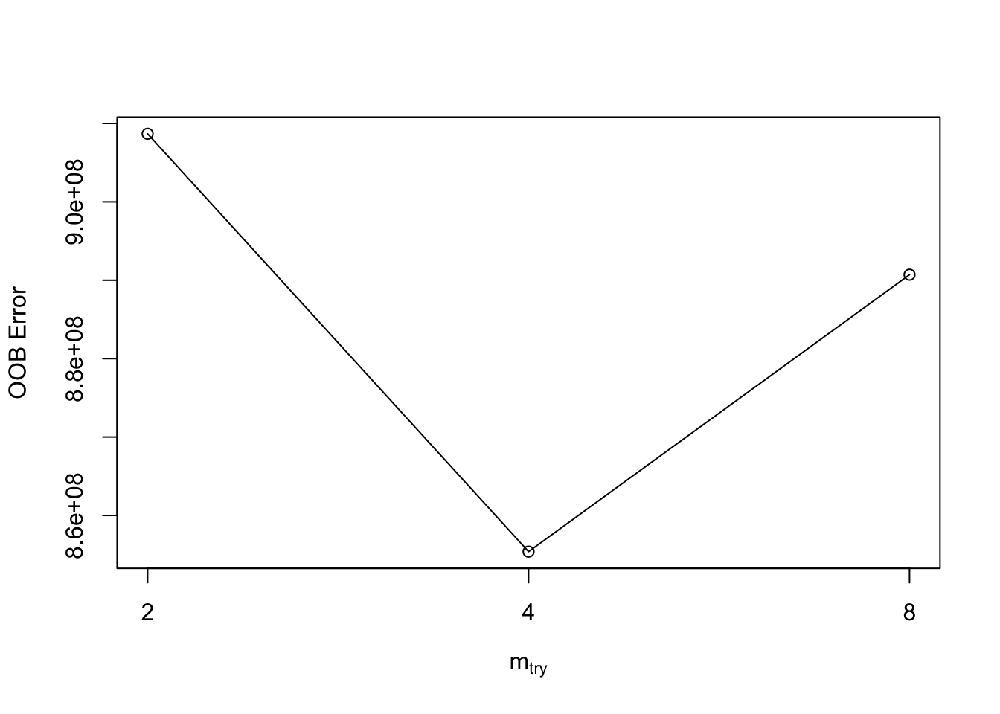
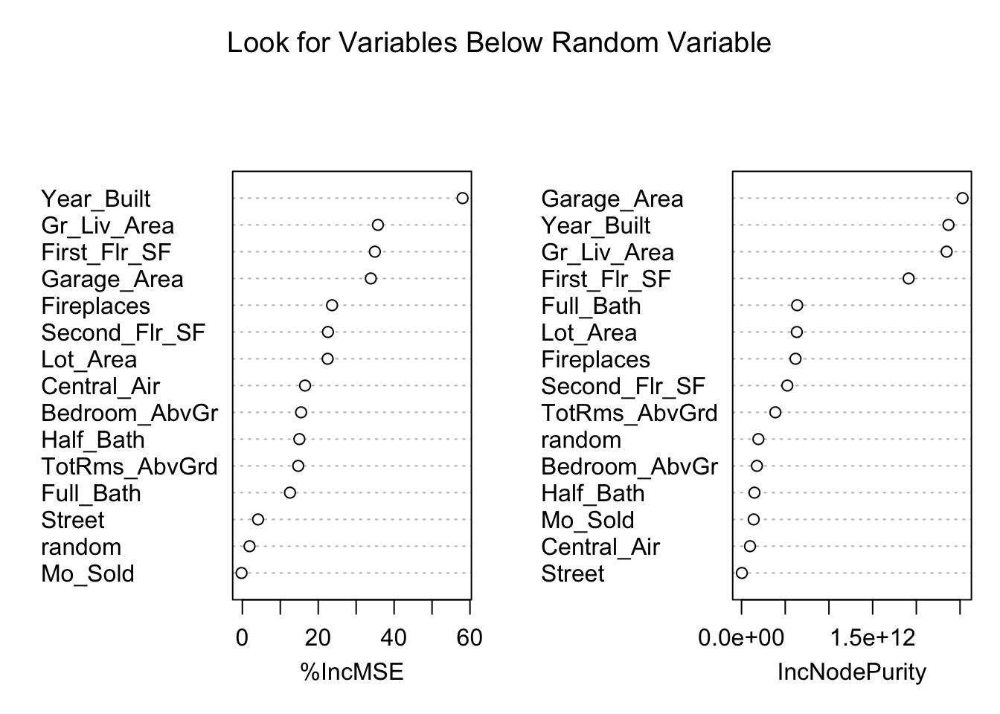
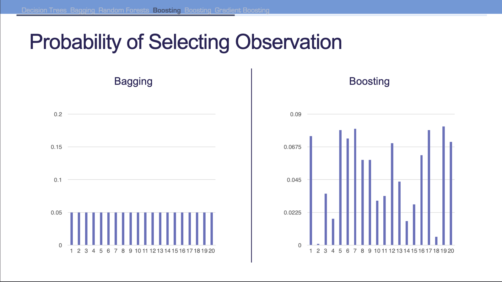
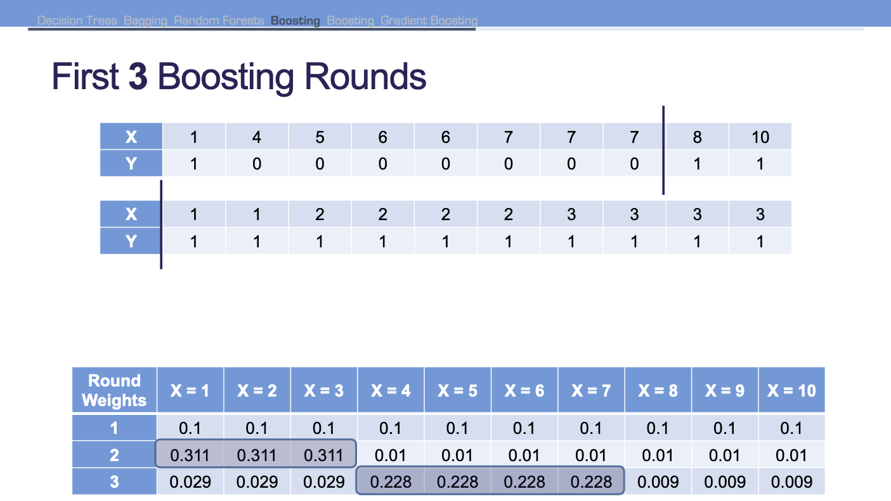
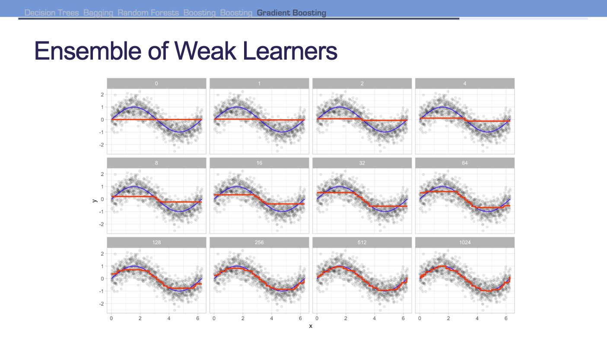
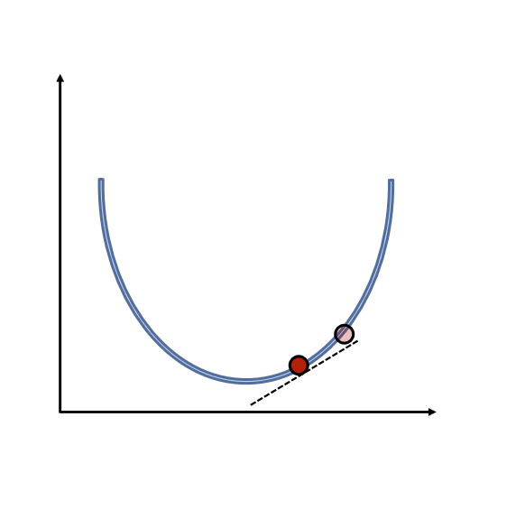

Code
# | include: false
import pandas as pd
training = r.training
testing = r.testingYang Chen
November 6, 2023
Decision trees are built by recursively splitting the data into successively purer subsets of data using measures of purity–Gini, entropy, misclassifcation error rate.

Bagging refers to bootstrap aggregation. In order to understand bagging, we need to understanding bootstrapping.
Take random samples of data with replacement that are the same size as the original dataset. Some observations will not be sampled which are referred to as out-of-bag observations.

The out-of-bag observations can be used as a validation set. However, there is no guarantee what the size of each validation set will be.
It’s been proven that a bootstrap sample will contain approximately 63% of observations on average. Sample size is the same as original as some observations are repeated.
Bagging aggregates the \(k\) models for the full dataset and compares the ensembled values to the actual truth of the original dataset.
This process can be computationally expensive if we focused on building \(k\) complex models. For trees, we will actually just stick to building simple decision tree models with only one split.

Random forests are ensembles of decision trees–ensembles work best when they find different patterns in the data.
Random forests also create random subsets of variables for each split and unpruned decision trees in each ensemble. The idea is that we give different a variables a chance to be a main split on the data. Results from trees are then ensembled together.
For a regression problem, we are taking the averages of the average predictions made from each model. The number of leaf nodes don’t matter since we are averaging the final predictions from each model.
ntree is the number of trees
importance is a flag to allow for variable importance
randomForest 4.7-1.1Type rfNews() to see new features/changes/bug fixes.
Attaching package: 'randomForest'The following object is masked from 'package:dplyr':
combineThe following object is masked from 'package:ggplot2':
marginTo get variable importance we can use varImpPlot:
from sklearn.ensemble import RandomForestRegressor
train_dummy = pd.get_dummies(training, columns=["Street", "Central_Air"])
y_train = train_dummy["Sale_Price"]
X_train = train_dummy.loc[:, train_dummy.columns != "Sale_Price"]
rf_ames = RandomForestRegressor(n_estimators=100, random_state=12345, oob_score=True)
rf_ames.fit(X_train, y_train)RandomForestRegressor(oob_score=True, random_state=12345)In a Jupyter environment, please rerun this cell to show the HTML representation or trust the notebook.
RandomForestRegressor(oob_score=True, random_state=12345)
We can plot the average decrease in impurity in the nodes of the tree:
import matplotlib.pyplot as plt
import seaborn as sns
forest_importances = pd.Series(
rf_ames.feature_importances_, index=rf_ames.feature_names_in_
)
fig, ax = plt.subplots()
forest_importances.plot.bar(ax=ax)
ax.set_title("Feature Importances")
ax.set_ylabel("Mean decrease in impurity")
fig.tight_layout()
plt.show()
The number of variables considered for each split is called mtry in caret. By default, mtry is \(\sqrt{p}\), with \(p\) being number of variables.
We use validation (out-of-bag samples) to tune along with number of trees. We are measuring the total amount of error across all the samples we did not take.
For each mtry, the same bootstrap samples are used to give each attempt a fair shot.
mtry = 4 OOB error = 855384447
Searching left ...
mtry = 8 OOB error = 890709806
-0.04129764 0.05
Searching right ...
mtry = 2 OOB error = 908679993
-0.06230596 0.05 
mtry OOBError
2 2 908679993
4 4 855384447
8 8 890709806Random forests use all the variables since they are averaged across all the trees used to build the model. Variable selection can be performed by a variety of methods.

The idea is that any variables that are below the completely random variable do not perform as well overall.
If you are building a random forest model for a client, you want to focus on the predictions, results, and maybe the variable importance. Beyond that, the interpretability may be too complex.
Advantages:
Disadvantages:
Most machine learning models are not interpretable in the classical sense. The relationships modeled are not linear so the interpretations are much more complicated than a typical regression.
Similar to GAMs however, we can get a general idea of overall pattern for a predictor variable compared to a target using partial dependence plots.
Boosting is similar to bagging in that we are still taking bootstrapped samples from the dataset. However, unlike bagging, observations are not sampled randomly. Boosting assigns weight to each trianing observation and uses the weight as a sampling distribution. In particular, we assign higher weight to the observations that are harder to classify.

Boosting is trying to learn from its mistakes by selecting the observations that it gets wrong more often. Bagging will build the ensemble model simultaneously, but since each model in boosting informs the next we have to build models sequentially.
For our previous tree sample our process is:

Boosted ensembles weight the votes of each classifier by a function of their accuracy. If the classifier get the higher weighted observations wrong, it has a higher error rate.
Put simply, more accurate guesses are more important.
Observations are each weighted based on how well they were predicted in the previous round.
Let the weights for each round be denoted as \(\omega_i\) and the predictions for round be \(\hat{y}_{1,i}, \hat{y}_{2,i}\).
The prediction for each observation is derived from a classification as follows:
\[ \hat{y}_i = \omega_1 \hat{y}_{1,i} + \omega_2 \hat{y}_{2,i} + \cdots \]
Idea behind gradient boosting to use simple model to predict the target. With the next model, we are trying to predict the initial model’s error, \(\epsilon_1\). Let’s say the first variable predicted most of the signal, then by predicting each error we are giving the other variables a chance to predict the signal where the first variable went wrong.
The idea of sequential building on the errors is why we consider this boosting. However, it’s different from the previous idea of boosting where we were applying weight classifiers to observations.
\[ y = f_1(x) + f_2(x) + f_3(x) + \cdots + f_k(x) + \epsilon_k \]
Gradient boosting regularizes with tunable parameters to prevent overfitting:
\[ y = f_1(x) + \eta f_2(x) + \eta f_3(x) + \cdots + \eta f_k(x) + \epsilon_k \]
Gradient boosting yields an additive ensemble model. There is no averaging of individual models. Predictions from each model are summed together for final prediction.
The key to gradient boosting is using weak learners (shallow trees). Although each learner would make poor predictions on their own, their addition provides good predictions.

Models are optimized to some form of loss function. For example, linear regression and decision trees typically look at minimizing SSE. The SSE represents the overall loss of the model. To find the model with the lowest loss function, we can use gradient descent.
Gradient descent iteratively updates parameters in order to minimize the loss function by moving int he direction of “steepest descent”.

Step size is updated at each step by multiplying the gradient by a learning rate. Without a learning rate, wem igth take steps too big or too small (too long to optimize).
Not all loss functions are convex and some have local minima or plateaus that make finding the global minimum difficult.
Stochastic gradient descent attempts to solve this by randomly sampling a fraction of the training observations for each tree in the ensemble. This makes the algorithm faster and more reliable, but may not always find the true overall minimum.
Grid search is very time consuming because of the time it takes to build these models. We can tune parameters one at a time:
Extreme gradient boosting has different advantages over traditional GBM:
XGBRegressor(base_score=None, booster=None, callbacks=None,
colsample_bylevel=None, colsample_bynode=None,
colsample_bytree=None, early_stopping_rounds=None,
enable_categorical=False, eval_metric=None, feature_types=None,
gamma=None, gpu_id=None, grow_policy=None, importance_type=None,
interaction_constraints=None, learning_rate=None, max_bin=None,
max_cat_threshold=None, max_cat_to_onehot=None,
max_delta_step=None, max_depth=None, max_leaves=None,
min_child_weight=None, missing=nan, monotone_constraints=None,
n_estimators=50, n_jobs=None, num_parallel_tree=None,
predictor=None, random_state=12345, ...)In a Jupyter environment, please rerun this cell to show the HTML representation or trust the notebook. XGBRegressor(base_score=None, booster=None, callbacks=None,
colsample_bylevel=None, colsample_bynode=None,
colsample_bytree=None, early_stopping_rounds=None,
enable_categorical=False, eval_metric=None, feature_types=None,
gamma=None, gpu_id=None, grow_policy=None, importance_type=None,
interaction_constraints=None, learning_rate=None, max_bin=None,
max_cat_threshold=None, max_cat_to_onehot=None,
max_delta_step=None, max_depth=None, max_leaves=None,
min_child_weight=None, missing=nan, monotone_constraints=None,
n_estimators=50, n_jobs=None, num_parallel_tree=None,
predictor=None, random_state=12345, ...)from sklearn.model_selection import GridSearchCV
param_grid = {
"n_estimators": list(range(5, 51, 5)),
2 "eta": [0.1, 0.15, 0.2, 0.25, 0.3],
3 "max_depth": list(range(1, 11)),
4 "subsample": [0.25, 0.5, 0.75, 1]
}
xgb = XGBRegressor()
grid_search = GridSearchCV(estimator=xgb, param_grid=param_grid, cv = 10)
# grid_search.fit(X_train, y_train)n_estimators is the number of trees we will use
eta is the regularization parameter
max_depth is the maximum depth of our trees
subsample is the fraction of our data that we use in stochastic gradient descent
XGBoost provides 3 built-in measures of variable importance:
One of the advantages of XGBoost is that it tries to cluster variables in terms of their importance. There is some notion of statistically different importances between variables.
XGBoost uses all variables since they are averages across all the trees used to build the model.
Variable selection can be performed by permutations of including and excluding variables. However, this is extremely time confusing.
Similarly to the random forest models, we can compare variables to a random variable and potentially exclude variables that end up less important than the random variable.
Advantages:
Disadvantages: